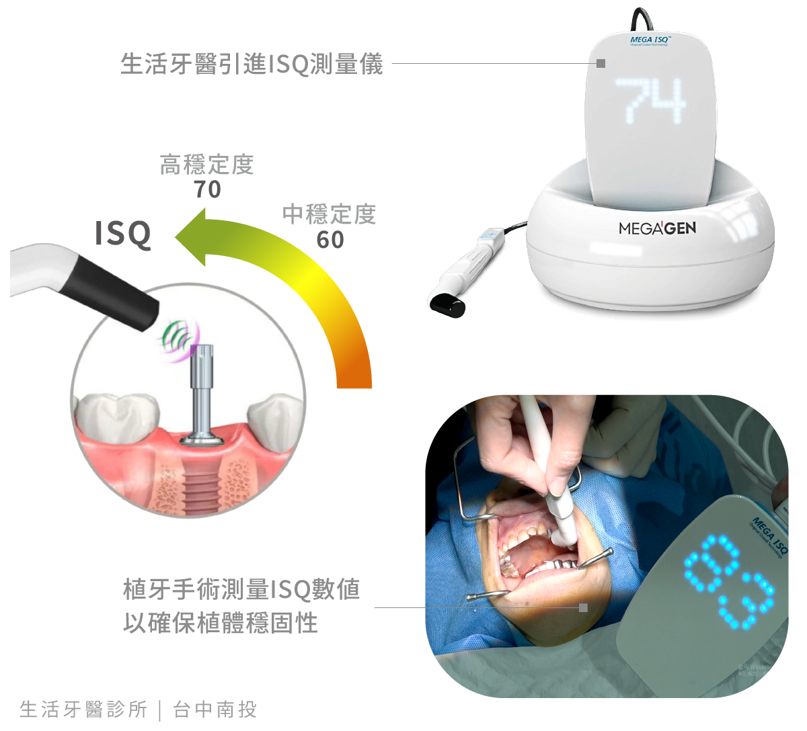

人工植體植入齒槽骨後，需要經過一段骨整合期，才能逐步承受日常咬合力量。過去臨床判斷較仰賴醫師的經驗與手感，如今可透過 ISQ 測量取得客觀數據，協助追蹤植體穩定狀態。
ISQ 檢測不會取代醫師的臨床判斷，而是提供另一項可量化的參考，讓後續假牙製作與受力時機能有更完整的評估依據。
1. 植牙為什麼需要確認穩固性？
植體剛植入時的穩定度主要來自植體與骨頭之間的機械固定；隨著骨整合進行，骨組織會逐漸與植體表面形成更穩定的連結。不同患者的骨質、植入位置與癒合速度都不相同，因此不能只靠固定天數判斷是否適合進入下一階段。
若能在不同時間點記錄植體穩定度，醫師便能觀察數值變化，配合影像、口內檢查與個人健康狀況，規劃後續贋復療程。
2. 什麼是 ISQ？
ISQ 是 Implant Stability Quotient 的縮寫，可譯為植體穩定度指數。測量時會在植體上連接專用元件，再以儀器發出磁脈衝並分析共振頻率，將結果轉換為可記錄的 ISQ 數值。
這項檢測運用共振頻率分析，不需要以手搖晃或敲擊植體，即可提供植體穩固程度的量化資訊。

3. ISQ 數值如何判讀？
ISQ 數值越高，通常代表植體在當下具有較好的穩定度。原始資料提到，數值高於 70 時可作為植體具備足夠承載能力的參考之一；但實際是否能裝戴假牙或開始承受咬合力，仍需由醫師綜合評估。
單次數值不是唯一標準。醫師也會比較不同回診時間的趨勢，並考量植體位置、骨質、手術方式、咬合設計與全身健康等條件。
4. ISQ 檢測有哪些優點？
非接觸式共振測量
測量過程不需搖晃或敲擊植體，可降低外力對癒合中植體的干擾。
提供客觀量化資料
以數值記錄植體穩定度，減少單靠觸感判斷所產生的差異。
方便追蹤穩定度變化
不同時間點的紀錄可協助醫師掌握骨整合趨勢，作為後續療程安排的參考。
5. 數位科技輔助植牙規劃
現代植牙可整合 3D 電腦斷層、口腔數位掃描、植牙導航與 ISQ 穩定度測量，從術前評估、手術執行到術後追蹤建立更完整的數位流程。
精密設備能提供更多資訊，但療程成效仍仰賴正確診斷、醫師經驗、假牙設計、口腔清潔與定期回診。選擇植牙療程時，應完整了解評估方式與後續照護規劃。
ISQ 數值僅是植體穩定度的評估工具之一，不能單獨視為成功保證或立即受力的依據。實際療程時機需由醫師依個人骨質、植體位置與癒合狀況判斷。